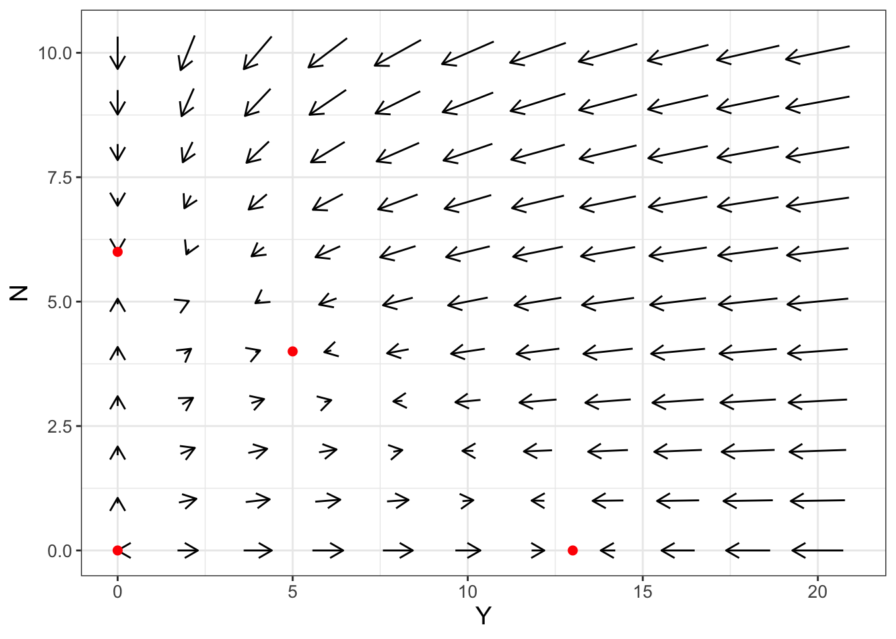
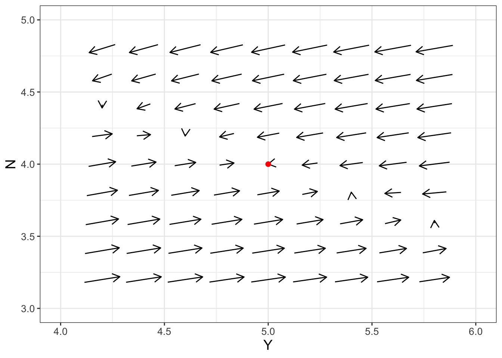
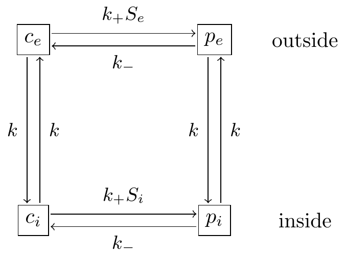

17 Local Linearization and the Jacobian
Chapters 15 and 16 focused on systems of differential equations and using phase planes to determine a preliminary classification of any equilibrium solution. In this chapter we study local linearization and the associated Jacobian matrix. These tools are used to analyze stability of equilibrium solutions for a nonlinear system, thereby building a bridge between nonlinear and linear systems of equations. Let’s get started!
Note
This chapter uses following libraries: ggplot2, and tibble (all part of the tidyverse),demodelr, as well as the stats library (which should be automatically loaded when R begins). See Section 2.3 on how to install packages. Prior to running any code in this section, include library(tidyverse) and library(demodelr).
17.1 Competing populations
Let’s take a look at a familiar example from Chapter 9, specifically the experiments of growing different species of yeast together (Gause 1932). Equation 17.1 (adapted from the one presented in Gause (1932)) represents the volume of two species of yeast (which we will call \(Y\) and \(N\)) growing in the same solution:
\[ \begin{split} \frac{dY}{dt} &= .2 Y \left( \frac{13-Y-2N}{13} \right) \\ \frac{dN}{dt} &= .06 N \left( \frac{6-N-.4Y}{6} \right) \\ \end{split} \tag{17.1}\]
While Equation 17.1 is a tricky model to consider, the terms \(2N\) and \(.4Y\) represent the effect that \(Y\) and \(N\) have on each other since they are competing for the same resource. If these terms weren’t present, both \(Y\) and \(N\) would follow a logistic growth (verify this on your own).
Equation 17.1 has 4 equilibrium solutions: \((Y,N)=(0,0)\), \((Y,N)=(13,0)\), \((Y,N)=(0,6)\), and \((Y,N)=(5,4)\) (Exercise @ref(exr:yeast-ss-17)). Figure 17.1 shows the phase plane for this system along with the equilibrium solutions.1
Let’s take a closer look at the phase plane near the equilibrium solution \((Y,N)=(5,4)\) in Figure 17.2:

The phase plane in Figure 17.2 looks like this equilibrium solution is stable (the arrows seem to suggest a “swirling” into this equilibrium solution. However, another way to verify this is by applying a locally linear approximation. Better stated, because Equation 17.1 is a system of differential equations, we will construct a tangent plane approximation around \(Y=5\), \(N=4\). Let’s review how to do that next.
17.2 Tangent plane approximations
For a multivariable function \(f(x,y)\), the tangent plane approximation at the point \(x=a\), \(y=b\) is given by Equation 17.2:
\[ L(x,y) = f(a,b) + f_{x}(a,b) \cdot (x-a) + f_{y}(a,b) \cdot (y-b), \tag{17.2}\]
where \(f_{x}\) is the partial derivative of \(f(x,y)\) with respect to \(x\) and \(f_{y}\) is the partial derivative of \(f(x,y)\) with respect to \(y\).
We will apply Equation 17.2 to Equation 17.1 at the equilibrium solution at \((Y,N)=(5,4)\). Since we have two equations, we need to compute two tangent plane approximations (one for each equation). The right hand sides for Equation 17.1 look complicated, but we can expand them to identify \(f(Y,N)=.2Y - .01538 Y^{2} - .03077 YN\) and \(g(Y,N)= .06N-.01 N^{2} - .004YN\).
First consider \(f(Y,N)\). Let’s compute the partial derivatives for \(f(Y,N)\) at the equilibrium solution:
\[ \begin{split} f_{Y} = .2 - .03076Y - .03077N & \rightarrow f_{Y}(5,4)=-.0769 \\ f_{N} = - .03077 Y & \rightarrow f_{N}(5,4)=-.1539 \end{split} \]
We also know that \(f(5,4)=0\). As a result, the tangent plane approximation for \(f(Y,N)\) is given by Equation 17.3:
\[ f(Y,N) \approx -.0769 \cdot (Y-5) -.1539 \cdot (N-4) \tag{17.3}\]
Likewise if we consider \(g(Y,N)= .06N-.01 N^{2} - .004YN\), we have:
\[ \begin{split} g_{Y} &= -.004N \rightarrow g_{Y}(5,4)=-.016 \\ g_{N} &= .06 -.02N-.004Y \rightarrow g_{N}(5,4)=-.04 \end{split} \]
We also know that \(g(5,4)=0\). As a result, the tangent plane approximation for \(g(Y,N)\) is given by Equation 17.4:
\[ g(Y,N) \approx -.016 \cdot (Y-5) -.04 \cdot (N-4) \tag{17.4}\]
So, at the equilibrium solution \((Y,N)=(5,4)\), Equation 17.1 behaves like the following system of equations (Equation 17.5):
\[ \begin{split} \frac{dY}{dt} &= -.0769 \cdot (Y-5) -.1539 \cdot (N-4) \\ \frac{dN}{dt} &= -.016 \cdot (Y-5) -.04 \cdot (N-4) \end{split} \tag{17.5}\]
17.3 The Jacobian matrix
Equation 17.5 looks like a linear system of equations; however, we first need to re-define our system with the change of variables \(y = Y-5\), \(n = N-4\), which essentially is a shift of the variables so the equilibrium solution is at the origin (Equation 17.6):
\[ \begin{split} \frac{dy}{dt} &= -.0769 y -.1539 n \\ \frac{dn}{dt} &= -.016 y -.04 n \end{split} \tag{17.6}\]
Then we can write Equation 17.6 in matrix form using the tools from Chapter 15:
\[ \begin{pmatrix} y' \\ n' \end{pmatrix} =\begin{pmatrix} -.0769 & -.1539 \\ -.016 & -.04 \end{pmatrix} \begin{pmatrix} y \\ n \end{pmatrix} \tag{17.7}\]
We define the matrix \(\displaystyle J= \begin{pmatrix} -.0769 & -.1539 \\ -.016 & -.04 \end{pmatrix}\) as the Jacobian matrix.
More generally, let’s say we have the following system of differential equations, with an equilibrium solution at \((x,y)=(a,b)\):
\[ \begin{split} \frac{dx}{dt} &= f(x,y) \\ \frac{dy}{dt} &= g(x,y) \end{split} \]
The Jacobian matrix at that equilibrium solution is:
\[ J_{(a,b)} =\begin{pmatrix} f_{x}(a,b) & f_{y}(a,b) \\ g_{x}(a,b) & g_{y}(a,b) \end{pmatrix} \tag{17.8}\]
The notation \(J_{(a,b)}\) signifies the Jacobian matrix evaluated at the equilibrium solution \((x,y)=(a,b)\). The Jacobian matrix (Equation 17.8) follows naturally from tangent plane approximations (Equation 17.2). In later chapters we will use the Jacobian matrix to investigate stability of nonlinear systems.
The Jacobian matrix is part of the following system of linear equations (Equation 17.9):
\[ \begin{split} \frac{dX}{dt} &= f_{x}(a,b) \cdot X + f_{y}(a,b) \cdot Y \\ \frac{dY}{dt} &= g_{x}(a,b) \cdot X + g_{y}(a,b) \cdot Y \end{split} \tag{17.9}\]
You may recognize that Equation 17.5 was a specific example of Equation 17.9. The variables \(X=x-a\) and \(Y=y-b\) help translate the tangent plane equation into a linear system. Also notice how Equation 17.8 does not include the terms \(f(a,b)\) or \(g(a,b)\) from Equation 17.2. This is because of the fact that we are building our tangent plane approximation at an equilibrium solution, so \(f(a,b)=g(a,b)=0\)!
One more additional note: when we visualize the phase plane for a Jacobian matrix, we center the window at the origin \((x,y)=(0,0)\) (rather than at the equilibrium solution \((a,b)\)) because Equation 17.9 is a linear system, with an equilibrium solution at the origin. While we don’t discuss it here, the Jacobian matrix also extends to higher order systems as well.
17.3.1 An unstable equilibrium solution
Let’s return to Equation 17.1 and investigate the Jacobian at the origin \((Y,N)=(0,0)\). The Jacobian matrix at that solution is the following:
\[ J_{(0,0)} =\begin{pmatrix} .2 & 0 \\0 & .06 \end{pmatrix} \tag{17.10}\]
(You should verify this on your own). This Jacobian matrix leads to an uncoupled system of linear equations where \(Y' = .2Y\) and \(N'=.06N\). In this case, both \(Y\) and \(N\) are growing exponentially. This type of behavior supports the idea that both \(Y\) and \(N\) are growing away from the origin, as indicated in Figure 17.1.
The Jacobian matrix helps confirm some of our intuition from examining the phase plane of a system of differential equations. At the heart of the Jacobian matrix is that idea that we can understand the dynamics of a nonlinear system through examining a closely related linear system. Chapter 18 will continue to build on this idea, giving you a tool to quantitatively analyze the stability of an equilibrium solution.
17.4 Differentiation in R
Computing the Jacobian and partial derivatives in this section is mostly done “by hand”. Technology does exist for symbolic differentiation, especially of complex expression.
In R the command D paired with the function expression can compute partial derivatives. Consider \(\displaystyle f(Y,N)=r_{1}Y \cdot \frac{\left(K_{1} - Y - c_{1}N \right)}{K_{1}}\). We can calculate \(\displaystyle \frac{\partial f}{\partial Y}\) with the following code:
D(expression(r1 * Y * (K1 - Y - c1*N) / K1), "Y")The resulting expression can also be evaluated with any numeric values of the parameters or variables. The process we use is:
- Create a symbolic expression for the partial derivatives.
- Substitute values of any inputs.
- If the function is fully specified, then evaluate it numerically.
For example, to evaluate \(\displaystyle \frac{\partial f}{\partial Y}\) when \(r_{1} = 0.2\), \(c_{1}=2\), and \(K_{1}=13\), we will have the following:
# 1: Create a symbolic expression and compute partial derivative with respect to Y:
fY <- D(expression(r1 * Y * (K1 - Y - c1*N) / K1), "Y")
# 2.1 Define inputs values for parameters and variables:
inputs <- list(r1 = 0.2, c1 = 2, K1=13, Y=5, N=4)
# 2.2: Substitute parameter values into the expression
fY_sub <- do.call(substitute, list(fY, inputs))
# 3. Evaluate the result
eval(fY_sub)Notice how the evaluation step defines a list of inputs, and then uses the functions do.call and substitute to evaluate the expression. The output fY_sub is still an evaluated expression. Step 3 applies the function eval to numerically compute the result. This last step only works if all parameters and variables are defined.
The downside to symbolic differentiation with R is that while sometimes the resulting expression may be correct - it isn’t algebraically simplified. Consider for example \(\displaystyle f(x,y)=y + \frac{5x^2}{4+x^{2}}\). The value of \(\displaystyle \frac{\partial f}{\partial x}\) is \(\displaystyle \frac{40x}{(4+x^{2})^{2}}\) after algebraic simplification with the quotient rule. Exercise @ref(exr:quotient-17) will have you explore this further.
Other programs that can do symbolic manipulation include: - Mathematica, which includes Wolfram alpha - sageMath - Maple - Maxima
17.5 Exercises
Exercise 17.1 Using algebra, show that the 4 equilibrium solutions to Equation 17.1 are \((Y,N)=(0,0)\), \((Y,N)=(13,0)\), \((Y,N)=(0,6)\), and \((Y,N)=(5,4)\) Hint: Perhaps first determine the nullclines for each solution.
Exercise 17.2 Construct the Jacobian matrices for the equilibrium solutions \((Y,N)=(13,0)\) and \((Y,N)=(0,6)\) to Equation 17.1.
Exercise 17.3 Let \(\displaystyle f(x,y)=y + \frac{5x^2}{4+x^{2}}\). By hand, verify \(\displaystyle \frac{\partial f}{\partial x} = \frac{40x}{(4+x^{2})^{2}}\). Then use R to determine \(\displaystyle \frac{\partial f}{\partial x}\). Show the algebraic steps to simplify the output from R to the simplified form of \(\displaystyle \frac{\partial f}{\partial x}\).
Exercise 17.4 Use symbolic differentiation in R to verify that when \(g(Y,N)= .06N-.01 N^{2} - .004YN\), then \(g_{Y}= -.004N\) and \(g_{N}=.06 -.02N-.004Y\)
Exercise 17.5 Consider the following system of differential equations:
\[ \begin{split} \frac{dY}{dt} &= r_{1}Y \cdot \frac{\left(K_{1} - Y - c_{1}N \right)}{K_{1}} \\ \frac{dN}{dt} &= r_{2}Y \cdot \frac{\left(K_{2} - N - c_{2}Y \right)}{K_{2}} \end{split} \]
- Use
Rto evaluate that this system of differential equations has an equilibrium solution at \((Y,N)=(5,4)\) when \(r_{1}=.2\), \(r_{2}=.06\), \(K_{1}=13\), \(K_{2}=6\), \(c_{1}=2\), and \(c_{2}=.4\). - Let \(\displaystyle f(Y,N)=r_{1}Y \cdot \frac{\left(K_{1} - Y - c_{1}N \right)}{K_{1}}\). Use symbolic differentiation in
Rto compute \(f_{Y}\) and \(f_{N}\). - Let \(\displaystyle g(Y,N)=r_{2}Y \cdot \frac{\left(K_{2} - N - c_{2}Y \right)}{K_{2}}\). Use symbolic differentiation in
Rto compute \(g_{Y}\) and \(g_{N}\). - Use
Rto evaluate \(f_{Y}\), \(f_{N}\), \(g_{Y}\), and \(g_{N}\) at the equilibrium solution \((Y,N)=(5,4)\). - Using your previous answer, construct the Jacobian matrix at this equilibrium solution. Compare your answer to Equation 17.7. What do you notice?
Exercise 17.6 By solving directly, show that \((H,L)=(0,0)\) and \((4,3)\) are equilibrium solutions to the following system of equations:
\[ \begin{split} \frac{dH}{dt} &= .3 H - .1 HL \\ \frac{dL}{dt} &=.05HL -.2L \end{split} \]
Exercise 17.7 A system of two differential equations has a Jacobian matrix at the equilibrium solution \((0,0)\) as the following:
\[ J_{(0,0)}=\begin{pmatrix} 0 & -1 \\ 1 & 0 \end{pmatrix} \]
What would be a system of differential equations that would produce that Jacobian matrix?
Exercise 17.8 Consider the following nonlinear system:
\[ \begin{split} \frac{dx}{dt} &= y-1 \\ \frac{dy}{dt} &= x^{2}-1 \end{split} \]
- Verify that this system has equilibrium solutions at \((-1,1)\) and \((1,1)\).
- Determine the linear system associated with the tangent plane approximation at the equilibrium solution \((x,y)=(-1,1)\) and \((1,1)\) (two separate linear systems).
- Construct the Jacobian matrix at the equilibrium solutions at \((-1,1)\) and \((1,1)\).
- With the Jacobian matrix, visualize a phase plane at these equilbrium solutions to estimate stability of the equilibrium solution.
Exercise 17.9 (Inspired by Strogatz (2015)) Consider the following nonlinear system:
\[ \begin{split} \frac{dx}{dt} &= y-x \\ \frac{dy}{dt} &=-y + \frac{5x^2}{4+x^{2}} \end{split} \]
- Verify that the point \((x,y)=(1,1)\) is an equilibrium solution.
- Determine the linear system associated with the tangent plane approximation at the equilibrium solution \((x,y)=(1,1)\).
- Construct the Jacobian matrix at this equilibrium solution.
- With the Jacobian matrix, visualize a phase plane at that equilbrium solution to estimate stability of the equilibrium solution.
Exercise 17.10 Consider the following system:
\[ \begin{split} \frac{dx}{dt} &= y^{2} \\ \frac{dy}{dt} &= - x \end{split} \]
- Determine the equilibrium solution.
- Visualize a phase plane of this system of differential equations.
- Construct the Jacobian at the equilibrium solution.
- Use the fact that \(\displaystyle \frac{dy}{dt} / \frac{dx}{dt} = \frac{dy}{dx}\), which should yield a separable differential equation that will allow you to solve for a function \(y(x)\). Plot several solutions of \(y(x)\). How does that solution compare to the phase plane from the Jacobian matrix?
Exercise 17.11 When \(\displaystyle f(Y,N)=k_{1}Y \cdot \frac{\left(K - Y - c_{1}N \right)}{K}\), use R to compute \(\displaystyle \frac{\partial f}{\partial N}\).
Exercise 17.12 The Van der Pol Equation is a second-order differential equation used to study radio circuits. In Chapter 16 you showed that the differential equations \(x'' + \mu \cdot (x^{2}-1) x' + x = 0\), where \(\mu\) is a parameter can be written as a system of equations:
\[ \begin{split} \frac{dx}{dt} &= y \\ \frac{dy}{dt} &= -x-\mu (x^{2}-1)y \end{split} \]
- Determine the general Jacobian matrix \(J_{(x,y)}\) for this system of equations.
- The point \((0,0)\) is an equilibrium solution. Evaluate the Jacobian matrix at the point \((0,0)\). Your Jacobian matrix will depend on \(\mu\).
- Evaluate your Jacobian matrix at the \((0,0)\) equilibrium solution for different values of \(\mu\) ranging from \(-3\), \(-1\), 0, 1, 3.
- Make a phase plane for the Jacobian matrices at each of the values of \(\mu\).
- Based on the phase planes that you generate, evaluate the stability of the equilibrium solution as \(\mu\) changes.
Exercise 17.13 (Inspired by Logan and Wolesensky (2009)) A population of fish \(F\) has natural predators \(P\). A model that describes this interaction is the following:
\[ \begin{split} \frac{dF}{dt} &= F - .3FP \\ \frac{dP}{dt} &= .5FP - P \end{split} \]
- What are the equilibrium solutions for this differential equation?
- Construct a Jacobian matrix for each of the equilibrium solutions.
- Based on the phase plane from the Jacobian matrices, evaluate the stability of the equilibrium solutions.
Exercise 17.14 (Inspired by Pastor (2008)) The amount of nutrients (such as carbon) in soil organic matter is represented by \(N\), whereas the amount of inorganic nutrients in soil is represented by \(I\). A system of differential equations that describes the turnover of inorganic and organic nutrients is the following:
\[ \begin{split} \frac{dN}{dt} &= L + kdI - \mu N I - \delta N \\ \frac{dI}{dt} &= \mu N I - k d I - \delta I \end{split} \]
- Verify that \(\displaystyle N = \frac{L}{\delta}, \; I = 0\) and \(\displaystyle N = \frac{kd+\delta}{\mu}, \; I = \frac{L \mu - \delta k d - \delta^{2}}{\mu \delta}\) are equilibrium solutions for this system.
- Use
Rto compute each entry of the Jacobian matrix. - Construct a Jacobian matrix for each of the equilibrium solutions.
Exercise 17.15 (Inspired by Logan and Wolesensky (2009) & Kermack, McKendrick, and Walker (1927)) A model for the spread of a disease where people recover is given by the following differential equation:
\[ \begin{split} \frac{dS}{dt} &= -\alpha SI \\ \frac{dI}{dt} &= \alpha SI - \gamma I \\ \frac{dR}{dt} &= \gamma I \end{split} \]
Assume this population has \(N=1000\) people.
- Determine the equilibrium solutions for this system of equations.
- Construct the Jacobian for each of the equilibrium solutions.
- Let \(\alpha=0.001\) and \(\gamma = 0.2\). With the Jacobian matrix, generate the phase plane (using the equations for \(\displaystyle \frac{dS}{dt}\) and \(\displaystyle \frac{dI}{dt}\) only) for all of the equilibrium solutions and classify their stability.

Exercise 17.16 (Inspired by Keener and Sneyd (2009)) The chemical glucose is transported across the cell membrane using carrier proteins. These proteins can have different states (open or closed) that can be bound to a glucose substrate. The schematic for this reaction is shown in Figure 17.3. The system of differential equations describing this reaction is:
\[ \begin{split} \frac{dp_{i}}{dt} &= k p_{e} - k p_{i} + k_{+} s_{i}c_{i}-k_{i}p_{i} \\ \frac{dp_{e}}{dt} &= k p_{i} - k p_{e} + k_{+} s_{e}c_{e}-k_{-}p_{e} \\ \frac{dc_{i}}{dt} &= k c_{e} - k c_{i} + k_{-} p_{i}-k_{+}s_{i}c_{i} \\ \frac{dc_{e}}{dt} &= k c_{i} - k c_{e} + k_{-} p_{e}-k_{+}s_{e}c_{e} \end{split} \]
- We can reduce this to a system of three equations. First show that \(\displaystyle \frac{dp_{i}}{dt} + \frac{dp_{e}}{dt}+ \frac{dc_{i}}{dt} + \frac{dc_{e}}{dt} = 0\). Given that \(p_{i}+p_{e}+c_{i}+c_{e}=C_{0}\), where \(C_{0}\) is constant, use this equation to eliminate \(p_{i}\) and write down a system of three equations.
- Determine the equilibrium solutions for this new system of three equations.
- Use
Rto compute each entry of the Jacobian matrix. - Construct the Jacobian matrix for each of these equilibrium solutions.
Gause, G. F. 1932. “Experimental Studies on the Struggle for Existence: I. Mixed Population of Two Species of Yeast.” Journal of Experimental Biology 9 (4): 389–402.
Keener, James, and James Sneyd, eds. 2009. Mathematical Physiology. New York, NY: Springer New York. https://doi.org/10.1007/978-0-387-75847-3.
Kermack, William Ogilvy, Anderson Gray McKendrick, and Gilbert Thomas Walker. 1927. “A Contribution to the Mathematical Theory of Epidemics.” Proceedings of the Royal Society of London. Series A, Containing Papers of a Mathematical and Physical Character 115 (772): 700–721. https://doi.org/10.1098/rspa.1927.0118.
Logan, J. David, and William Wolesensky. 2009. Mathematical Methods in Biology. 1st ed. Hoboken, N.J: Wiley.
Pastor, John. 2008. Mathematical Ecology of Populations and Ecosystems. West Sussex, United Kingdom: Wiley-Blackwell.
Strogatz, Steven H. 2015. Nonlinear Dynamics and Chaos: With Applications to Physics, Biology, Chemistry, and Engineering. 2nd ed. Boulder, CO: CRC Press.
I encourage you to use the
phaseplanecommand to re-create Figure 17.1. If you do, be sure to use the optionsx_windowandy_windowto set things correctly.↩︎